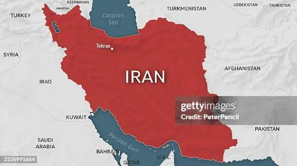

ISLAMIC REPUBLIC OF IRAN
Jump to:
Country Map
|
Quick Facts
Iran Separate Map

📝 Quick Facts About Iran:
Capital:
Tehran
Language:
Persian (Farsi)
Currency:
Iranian Rial
Bordering Countries:
Pakistan, Afghanistan, Turkmenistan, Azerbaijan, Armenia, Turkey, and Iraq.
← Back to Asia Map
|
Home (World Map)